In this section, the library functions that are shipped in the Essential Calculate library are discussed. The arguments required by each of these functions are listed in bold text. Optional arguments are listed in a normal text.
Following functions are discussed under this section:
Returns the absolute value of a number. The absolute value of a non-negative number is the number itself. The absolute value of a negative number is -1 times the number.
Syntax
ABS(number), where:
number is the real number for which you want the absolute value.
Returns the inverse cosine of a number. Inverse cosine is also referred to as arccosine. The arccosine is the angle whose cosine is the given number. The returned angle is given in radians in the range of 0 to pi.
Syntax
ACOS(number), where:
number is the cosine of the angle that you want and must be between -1 and 1.
Returns the inverse hyperbolic cosine of a number. The number must be greater than or equal to 1. The inverse hyperbolic cosine is the value whose hyperbolic cosine is the given number.
Syntax
ACOSH(number), where:
number is any real number that is greater than or equal to 1.
Returns True if all the arguments have a logical value of True and returns False if at least one argument is False.
Syntax
AND(logical1, logical2, ...), where:
logical1, logical2, ... are multiple conditions you want to test for True or False.
Remarks
· The arguments must evaluate to logical values (True or False).
· If an argument does not evaluate to True or False, those values are ignored.
· There must be at least one value in the argument list.
Returns the inverse sine of a number. Inverse sine is also referred to as arcsine. The arcsine is the angle whose sine is the given number. The returned angle is given in radians in the range from -pi/2 to +pi/2.
Syntax
ASIN(number), where:
number is the sine of the angle that you want and must be between -1 and 1.
Returns the inverse hyperbolic sine of a number. The inverse hyperbolic sine is the value whose hyperbolic sine is the given number, so ASINH(SINH(number)) equals number.
Syntax
ASINH(number), where:
number is any real number.
Returns the inverse tangent of a number. Inverse tangent is also known as arctangent. The arctangent is the angle whose tangent is a number. The returned angle is given in radians in the range from -pi/2 to +pi/2.
Syntax
ATAN(number), where:
number is the tangent of the angle that you want.
Returns the inverse tangent of the specified x- and y-coordinates. The arctangent is the angle from the x-axis to a line containing the origin (0, 0) and the point (x_num, y_num). The angle is given in radians between -pi and pi, excluding -pi.
Syntax
ATAN2(x_num,y_num), where:
x_num is the X coordinate of the point.
y_num is the Y coordinate of the point.
Remarks
· A positive result represents a counterclockwise angle from the x-axis; a negative result represents a clockwise angle.
· ATAN2(a,b) equals ATAN(b/a), except that a can equal 0 in ATAN2.
Returns the inverse hyperbolic tangent of a number. Number must be strictly between -1 and 1. The inverse hyperbolic tangent is the value whose hyperbolic tangent is number, so ATANH(TANH(number)) equals the given number.
Syntax
ATANH(number), where:
number is any real number that is between 1 and -1.
Returns the average of the absolute mean deviations of data points. AVEDEV is a measure of the variability in a data set.
Syntax
AVEDEV(number1, number2, ...), where:
number1, number2, ... are arguments for which, you want the average of the absolute deviations. You can also use a single array or a reference to an array instead of arguments separated by commas.
Remarks
· The arguments must either be numbers or names, arrays or references that contain numbers.
· If an array or reference argument contains text, logical values or empty cells, those values are ignored; however, cells with the a zero value are included.
· The equation for average deviation is,
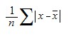
· where x-bar is the arithmetic mean of the data.
Returns the average (arithmetic mean) of the arguments.
Syntax
AVERAGE(number1, number2, ...), where:
number1, number2, ... are numeric arguments for which you want the average.
Remarks
· The arguments must either be numbers or names, arrays or references that contain numbers.
· If an array or reference argument contains text, logical values or empty cells, those values are ignored; however, cells with a zero value are included.
Calculates the average (arithmetic mean) of the values in the list of arguments. In addition to numbers and text logical values such as True and False are also included in the calculation.
Syntax
AVERAGEA(value1, value2, ...), where:
value1, value2, ... are cells, ranges of cells, or values for which you want the average.
Remarks
· The arguments must be numbers, names, arrays, or references.
· Array or reference arguments that contain text evaluate as 0 (zero). If the calculation should not include text values in the average, then use the AVERAGE function.
· Arguments that contain True evaluate as 1; arguments that contain False evaluate as 0 (zero).
Returns the average (arithmetic mean) of the arguments.
Syntax
AVG(number1, number2, ...), where:
number1, number2, ... are numeric arguments for which, you want the average.
Remarks
· This method is the same as AVERAGE and is included for compatibility purposes.
Returns the individual term binomial distribution probability.
Syntax
BINOMDIST(number_s, trials, probability_s, cumulative), where:
number_s is the number of successes in trials.
trials is the number of independent trials.
probability_s is the probability of success on each trial.
Cumulative is a logical value that determines the form of the function. If cumulative is True, then BINOMDIST returns the cumulative distribution which, is the probability that there are at most number_s successes; if False, it returns the probability that there are exactly number_s successes.
Remarks
· Number_s and trials are truncated to integers.
· Number_s should be >= 0 and <= trials.
· Probability_s should be >=0 and <= 1.
· The binomial probability mass function is,
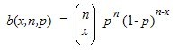
where:
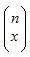
is COMBIN(n,x).
· The cumulative binomial distribution is,
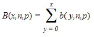
Returns number rounded up, away from zero, to the nearest multiple of significance. For example, if you want to avoid using pennies in your prices and your product is priced at $4.82, use the formula =CEILING(4.82,0.05) to round prices up to the nearest nickel.
Syntax
CEILING(number, significance), where:
number is the value you want to round off.
significance is the multiple to which you want to round.
Remarks
· Both values must be numeric.
· Regardless of the sign of a number, a value is rounded up when adjusted away from zero. If the number is an exact multiple of significance, no rounding occurs.
Returns the one-tailed probability of the chi-squared (χ2 ) distribution. The χ2 distribution is associated with a χ2 test.
Syntax
CHIDIST(x, degrees_freedom), where:
x is the value at which you want to evaluate the distribution.
degrees_freedom is the number of degrees of freedom.
Remarks
· Both arguments should be numeric.
· degrees_freedom >= 1 and < 10^10.
· CHIDIST is calculated as CHIDIST = P(X > x), where X is a χ2 random variable.
Returns the inverse of the one-tailed probability of the chi-squared (χ2) distribution. If probability = CHIDIST(x,...), then CHIINV(probability,...) = x. Use this function to compare observed results with expected ones in order to decide whether your original hypothesis is valid.
Syntax
CHIINV(probability, degrees_freedom), where:
probability is a probability associated with the chi-squared distribution.
degrees_freedom is the number of degrees of freedom.
Remarks
· Probability must be >= 0 and <= 1.
· degrees_freedom >=1 and = 10^10.
Given a value for probability, CHIINV seeks the value x such that CHIDIST(x, degrees_freedom) = probability. Thus, precision of CHIINV depends on precision of CHIDIST. CHIINV uses an iterative search technique.
Returns the test for independence. CHITEST returns the value from the chi-squared (c2) distribution for the statistic and the appropriate degrees of freedom.
Syntax
CHITEST(actual_range, expected_range), where:
actual_range is the range of data that contains observations to test against expected values.
expected_range is the range of data that contains the ratio of the product of row totals and column totals to the grand total.
Remarks
· The χ2 test first calculates a χ2 statistic using the formula,
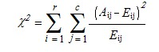
where:
Aij = actual frequency in the i-th row, j-th column
Eij = expected frequency in the i-th row, j-th column
r = number of rows
c = number of columns
A low value of χ2 is an indicator of independence.
The use of CHITEST is most appropriate when Eij's are not too small. Some statisticians suggest that each Eij should be greater than or equal to 5.
Returns the number of combinations for a given number of items. Use COMBIN to determine the total possible number of groups for a given number of items.
Syntax
COMBIN(number, number_chosen), where:
number is the number of items.
number_chosen is the number of items in each combination.
Remarks
· Numeric arguments are truncated to integers.
· A combination is any set or subset of items, regardless of their internal order. Combinations are distinct from permutations where the internal order is significant.
· The number of combinations is as follows, where number = n and number_chosen = k,
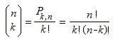
where:
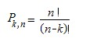
Joins several text strings into one text string.
Syntax
CONCATENATE (text1, text2, ...), where:
text1, text2, ... are text items to be joined into a single text item. The text items can be text strings, numbers, or single-cell references.
Remarks
· The "&" operator can be used instead of CONCATENATE to join text items.
Returns a value that you can use to construct a confidence interval about a population mean. The confidence interval is a range of values. In your sample, mean x is at the center of this range and the range is x ± CONFIDENCE. For example, if x is the sample mean of delivery times for products ordered through the mail, x ± CONFIDENCE is a range of population means.
Syntax
CONFIDENCE(alpha, standard_dev, size), where:
alpha is the significance level used to compute the confidence level. The confidence level equals 100*(1 - alpha)%, or in other words, an alpha of 0.05 indicates a 95 percent confidence level.
standard_dev is the population standard deviation for the data range and is assumed to be known.
size is the sample size.
Remarks
· All arguments must be non-numeric.
· Alpha must be > 0 and < 1.
· Standard_dev must be > 0.
· Size must be >= 1.
Returns the correlation coefficient of the array1 and array2 cell ranges.
Syntax
CORREL(array1, array2), where:
array1 is a cell range of values.
array2 is the second cell range of values.
Remarks
· array1 and array2 must have the same number of data points.
· The equation for the correlation coefficient is,
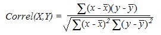
where x-bar and y-bar are the sample means AVERAGE(array1) and AVERAGE(array2).
Returns the cosine of the given angle.
Syntax
COS(number), where:
number is the angle in radians for which you want the cosine.
Returns the hyperbolic cosine of a number.
Syntax
COSH(number), where:
number is any real number for which you want to find the hyperbolic cosine.
Remarks
The formula for the hyperbolic cosine is,
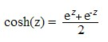
Counts the number of items in a list that contains numbers.
Syntax
COUNT(value1, value2, ...), where:
value1, value2, ... are arguments that can contain or refer to a variety of different types of data but, only numbers are counted.
Remarks
· Arguments that are numbers, dates or text representations of numbers are counted; arguments that are error values or text that cannot be translated into numbers are ignored.
· If an argument is an array or reference, only numbers in that array or reference are counted. Empty cells, logical values, text or error values in the array or reference are ignored.
Counts the number of cells that are not empty.
Syntax
COUNTA(value1, value2, ...), where:
value1, value2, ... are arguments representing the values you want to count. In this case, a value is any type of information, excluding empty cells.
Counts empty cells in a specified range of cells.
Syntax
COUNTBLANK(range), where:
range is the range from which you want to count the blank cells.
Remark
· Cells with formulas that return "" (empty text) are also counted. Cells with zero values are not counted.
Counts the number of cells within a range that meet the given criteria.
Syntax
COUNTIF(range, criteria), where:
range is the range of cells from which you want to count cells.
criteria is the criteria in the form of a number, expression or text that defines which cells will be counted. For example, the criteria can be expressed as ">32".
Remark
· If and SumIf are other library functions that can be used to conditionally compute values.
Returns covariance, the average of the products of deviations for each data point pair.
Syntax
COVAR(array1, array2), where:
array1 is the first cell range of numbers.
array2 is the second cell range of numbers.
Remarks
· The arguments must either be numbers or be names, arrays or references that contain numbers.
· array1 and array2 must have the same number of data points.
· The covariance is,
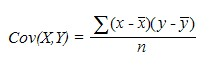
where X is array1, Y is array2, x-bar and y-bar are the sample means AVERAGE(array1) and AVERAGE(array2) and n is the sample size.
Returns the smallest value for which, the cumulative binomial distribution is greater than or equal to a criterion value.
Syntax
CRITBINOM(trials, probability_s, alpha), where:
trials is the number of Bernoulli trials.
probability_s is the probability of a success on each trial.
alpha is the criterion value.
Remarks
· Trials must be >= 0.
· Probability_s must be >=0 and <= 1.
· Alpha must be >= 0 and <= 1.
Returns the sequential serial number that represents a particular date.
Syntax
DATE(year, month, day), where:
year can be one to four digits. Year is interpreted based on 1900.
· If a year is between 0 (zero) and 1899 (inclusive), the value is added to 1900 to calculate the year. For example, DATE(102,11,12) returns November 12, 2002 (1900+102).
· If a year is between 1900 and 9999 (inclusive), the value is used as is, for example, DATE(2002,11,12) returns November 12, 2002.
month is a number representing the month of the year.
day is a number representing the day of the month.
Remark
· Dates are stored as sequential serial numbers so that they can be used in calculations. By default, January 1, 1900 is serial number 1 and November 12, 2002 is serial number 37572 because it is 37572 days after January 1, 1900.
Returns the serial number of the date represented by the date_text.
Syntax
DATEVALUE(date_text), where:
date_text is the text that represents a date as a formatted string. For example, "11/12/2002" or "12-Nov-2002" are text strings within quotation marks that represent dates. If the year portion of the date_text is omitted, DATEVALUE uses the current year from your computer's built-in clock. The time information in the date_text is ignored.
Remarks
· Dates are stored as sequential serial numbers so that they can be used in calculations. By default, January 1, 1900 is serial number 1, and November 12, 2002 is serial number 37572 because it is 37572 days after January 1, 1900.
· Most functions automatically convert date values to serial numbers.
Returns the day of a date, represented by a serial number. The day is given as an integer ranging from 1 to 31.
Syntax
DAY(serial_number), where:
serial_number is the date of the day you are trying to find. Dates should be entered by using the DATE function or as results of other formulas or functions. For example, use DATE(2002,4,23) for the 23rd day of April, 2002.
Returns the number of days between two dates based on a 360-day year (twelve 30-day months) which, is used in some accounting calculations.
Syntax
DAYS360(start_date, end_date, method), where:
start_date and end_date are the two dates between which you want to know the number of days. If start_date occurs after end_date, DAYS360 returns a negative number. Dates should be entered by using the DATE function or as results of other formulas or functions.
method is a logical value that specifies whether to use the U.S. or European method in the calculation.
If method is:
· False or omitted – The calculation uses the U.S. (NASD) method. If the starting date is the 31st of a month, it becomes equal to the 30th of the same month. If the ending date is the 31st of a month and the starting date is earlier than the 30th of a month, the ending date becomes equal to the 1st of the next month; otherwise the ending date becomes equal to the 30th of the same month.
· True – The calculation uses the European method. Starting dates and ending dates that occur on the 31st of a month become equal to the 30th of the same month.
Returns the depreciation of an asset for a specified period using the fixed-declining balance method.
Syntax
DB(cost, salvage, life, period, month), where:
cost is the initial cost of the asset.
salvage is the value at the end of the depreciation (sometimes called the salvage value of the asset).
life is the number of periods over which the asset is being depreciated (sometimes called the useful life of the asset).
period is the period for which you want to calculate the depreciation. Period must use the same units as life.
month is the number of months in the first year. If month is omitted, it is assumed to be 12.
Remarks
· The fixed-declining balance method computes the depreciation at a fixed rate. DB uses the following formulas to calculate the depreciation for a period,
(cost - total depreciation from prior periods) * rate
where rate = 1 - ((salvage / cost) ^ (1 / life)), rounded to three decimal places.
· Depreciation for the first and last periods is a special case. For the first period, DB uses this formula,
cost * rate * month / 12
· For the last period, DB uses this formula,
((cost - total depreciation from prior periods) * rate * (12 - month)) / 12
Returns the depreciation of an asset for a specified period using the double-declining balance method or some other method you specify.
Syntax
DDB(cost, salvage, life, period, factor), where:
cost is the initial cost of the asset.
salvage is the value at the end of the depreciation (sometimes called the salvage value of the asset).
life is the number of periods over which the asset is being depreciated (sometimes called the useful life of the asset).
period is the period for which you want to calculate the depreciation. Period must use the same units as life.
factor is the rate at which the balance declines. If factor is omitted, it is assumed to be 2 (the double-declining balance method).
 Note: All five arguments must be positive
numbers.
Note: All five arguments must be positive
numbers.
Remarks
· The double-declining balance method computes the depreciation at an accelerated rate. Depreciation is highest in the first period and decreases in successive periods. DDB uses the following formula to calculate depreciation for a period,
((cost-salvage) - total depreciation from prior periods) * (factor/life)
Converts radians into degrees.
Syntax
DEGREES(angle), where:
angle is the angle in radians that you want to convert.
Returns the sum of squares of deviations of data points from their sample mean.
Syntax
DEVSQ(number1, number2, ...), where:
number1, number2, ... are arguments for which you want to calculate the sum of squared deviations. You can also use a single array or a reference to an array instead of arguments separated by commas.
Remarks
· The arguments must be numbers or names, arrays or references that contain numbers.
· The equation for the sum of squared deviations is,
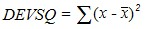
The Dollar function converts a number to text, using currency format.
The format used is $#,##0.00_);($#,##0.00).
Syntax:
Dollar (number, decimal_places)
Where:
number is the number, which you want to convert to text.
decimal_places is the number of decimal digits to be displayed. The value will be rounded off accordingly.
Returns the number rounded up to the nearest even integer.
Syntax
EVEN(number), where:
number is the value that is to be rounded.
Remarks
· Regardless of the sign of the number a value is rounded up when adjusted away from zero. If the number is an even integer no rounding occurs.
Returns e raised to the power of the given number.
Syntax
EXP(number), where:
number is the exponent applied to the base e.
Returns the exponential distribution.
Syntax
EXPONDIST(x, lambda, cumulative), where:
x is the value of the function.
lambda is the parameter value.
cumulative is a logical value that indicates which form of the exponential function is to be provided. If cumulative is True, EXPONDIST returns the cumulative distribution function; if False, it returns the probability density function.
Remarks
The equation for the probability density function is,
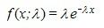
· The equation for the cumulative distribution function is,
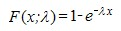
Returns the factorial of a number. The factorial of a number is the product of all positive integers <= the given number.
Syntax
FACT(number), where:
number is the non-negative number for which you want the factorial of. If the number is not an integer, it is truncated.
The False function returns alogical value when the given sting value is false.
Syntax:
False(stringvalue)
where:
stringvalue is to provide any text value or empty string.
Returns the F probability distribution.
Syntax
FDIST(x, degrees_freedom1, degrees_freedom2),
where:
x is the value at which to evaluate the function.
degrees_freedom1 is the numerator degrees of freedom.
degrees_freedom2 is the denominator degrees of freedom.
Remarks
· All arguments must be numeric.
· X must be >= 0.
· Both degrees_freedom1 and degrees_freedom2 must be >= 1 and < 10^10.
· FDIST is calculated as FDIST=P( F>x ), where F is a random variable that has an F distribution with degrees_freedom1 and degrees_freedom2 degrees of freedom.
The Finv function returns the inverse of the F probability distribution. If p = FDIST(x,...), then FINV(p,...) = x.
Using F distribution, you can compare the degree of variability for two data sets.
Syntax:
FINV(probability,deg_freedom1,deg_freedom2)
The FINV function syntax has the following three arguments (Argument is a value that provides information to an action, an event, a method, a property, a function, or a procedure):
Probability is a probability associated with the F cumulative distribution.
Deg_freedom1 is the numerator degrees of freedom.
Deg_freedom2 is the denominator degrees of freedom.
Returns the Fisher transformation at x. This transformation produces a function that is normally distributed rather than skewed.
Syntax
FISHER(x), where:
x is a numeric value for which you want the transformation.
Remarks
· X must be > -1 and < 1.
· The equation for the Fisher transformation is,
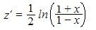
Returns the inverse of the Fisher transformation. If y = FISHER(x), then FISHERINV(y) = x.
Syntax
FISHERINV(y), where:
y is the value for which you want to perform the inverse of the transformation.
Remarks
· The equation for the inverse of the Fisher transformation is,
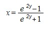
The Fixed function rounds off the given value to a specified number of decimal places and returns the value in text format.
Syntax:
Fixed (number, decimal_places, no_commas)
where:
number is the number, which you want to round off.
decimal_places is the number of decimal places you want to display in the result.
no_commas is a logical value. It will display commas when it is set to FALSE and does not display commas when it is set to TRUE.
Rounds off the given number down, toward zero, to the nearest multiple of significance.
Syntax
FLOOR(number, significance), where:
number is the numeric value that you want to round off.
significance is the multiple to which you want to round the number off.
Remarks
· Number and significance must have the same sign.
· Regardless of the sign of the number, a value is rounded down when adjusted away from zero. If a number is an exact multiple of significance, no rounding occurs.
Calculates a future value by using existing values using a linear regression. The predicted value is a y-value for a given x-value.
Syntax
FORECAST(x, known_ys, known_xs), where:
x is the data point for which you want to predict a value.
known_ys is the dependent array or range of data.
known_xs is the independent array or range of data.
Remarks
· The equation for FORECAST is a+bx,
where:

and
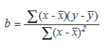
and
x-bar and y-bar are the sample means AVERAGE(known_xs) and AVERAGE(known_ys).
Returns the future value of an investment based on periodic, constant payments and interest rate.
Syntax
FV(rate, nper, pmt, pv, type), where:
rate is the interest rate per period.
nper is the total number of payment periods in an annuity.
pmt is the payment made each period; it cannot change over the life of the annuity. Typically, pmt contains principal and interest but, no other fees or taxes. If pmt is omitted, you must include the pv argument.
pv is the present value or lump-sum amount that a series of future payments is worth right now. If pv is omitted, it is assumed to be 0 (zero), and you must include the pmt argument.
type is the number 0 or 1 and indicates when payments are due. If type is omitted it is assumed to be 0. If type equals:
· 0 - Payments are due at the end of the period.
· 1 - Payments are due at the beginning of the period.
Note: For a more complete description of the
arguments in FV, see PV.
Remarks
· Make sure that you are consistent about the units you use for specifying rate and nper. If you make monthly payments for a four-year loan at 12 percent annual interest, use 12%/12 for rate and 4*12 for nper. If you make annual payments on the same loan, use 12% for rate and 4 for nper.
· For all the arguments, cash you pay out, such as deposits to savings, is represented by negative numbers; cash you receive, such as dividend checks, is represented by positive numbers.
Returns the gamma distribution.
Syntax
GAMMADIST(x, alpha, beta, cumulative), where:
x is the value at which you want to evaluate the distribution.
alpha is a parameter to the distribution.
beta is a parameter to the distribution. If beta = 1, GAMMADIST returns the standard gamma distribution.
cumulative is a logical value that determines the form of the function. If cumulative is True, GAMMADIST returns the cumulative distribution function; if False, it returns the probability density function.
Remarks
· X must be >= 0.
· Alpha and beta must be > 0.
· The equation for the gamma probability density function is,
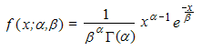
The standard gamma probability density function is,
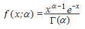
· When alpha = 1, GAMMADIST returns the exponential distribution with,
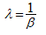
Returns the natural logarithm of the gamma function, Ã(x).
Syntax
GAMMALN(x), where:
x is the value for which you want to calculate GAMMALN.
Remarks
· x must be positive.
· GAMMALN is calculated as follows,
where:

Returns the inverse of the gamma cumulative distribution. If p = GAMMADIST(x,...), then GAMMAINV(p,...) = x.
Syntax
GAMMAINV(probability, alpha, beta), where:
probability is the probability associated with the gamma distribution.
alpha is a parameter to the distribution.
beta is a parameter to the distribution.
Remarks
· Probability must be >= 0 and <= 1.
· Alpha and beta must be positive.
Given a value for probability, GAMMAINV seeks value x such that GAMMADIST(x, alpha, beta, True) = probability. Thus, precision of GAMMAINV depends on the precision of GAMMADIST. GAMMAINV uses an iterative search technique.
Returns the geometric mean of an array or range of positive data.
Syntax
GEOMEAN(number1, number2, ...), where:
number1, number2, ... are arguments for which you want to calculate the mean.
Remarks
· The arguments must be either numbers or names, arrays or references that contain numbers.
· All values must be positive.
· The equation for the geometric mean is,
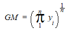
This feature enables you to calculate predicted exponential growth using existing data. This calculates and returns an array of values used for the regression analysis. Growth enables you to perform a regression analysis.
Table 3: Method Table
|
Method |
Description |
Parameters |
Type |
Return Type |
Reference links |
|
Growth() |
Calculates the Growth for an array of cells. |
Known y’s, Known x’s, new_x's |
Method |
String |
N/A |
The following is the formula to calculate Growth for an array of cells in a column:
[Syntax]
=GROWTH(known_y's, [known_x's], [new_x's],
Known_y's: A set of y-values you already know in a relationship, where y = b*m^x.
Known_x's: An optional set of x-values that you may already know in the relationship, where y = b*m^x.
New_x's: New x-values for which you want GROWTH to return corresponding y-values.
[Code]
=Growth(B2:B7,A2:A7,C6:C7)
Returns the harmonic mean of a data set. The harmonic mean is the reciprocal of the arithmetic mean of reciprocals.
Syntax
HARMEAN(number1, number2, ...), where:
number1, number2, ... are arguments for which you want to calculate the mean.
Remarks
· The arguments must be either numbers or names, arrays or references that contain numbers.
· All data values must be positive.
· The equation for the harmonic mean is,

Searches for a value in the top row of the array of values and then returns a value in the same column from a row you specify in the array. Use HLOOKUP when your comparison values are located in a row across the top of a table of data and you want to look down a specified number of rows. Use VLOOKUP when your comparison values are located in a column to the left of the data you want to find.
Syntax
HLOOKUP(lookup_value, table_array, row_index_num, range_lookup), where:
lookup_value is the value to be found in the first row of the table. Lookup_value can be a value, a reference or a text string.
table_array is a table of information in which data is looked up. Use a reference to a range or a range name.
row_index_num is the row number in table_array from which, the matching value will be returned. A row_index_num of 1 returns the first row value in table_array, a row_index_num of 2 returns the second row value in table_array and so on.
range_lookup is a logical value that specifies whether you want HLOOKUP to find an exact match or an approximate match. If True or omitted, an approximate match is returned. In other words, if an exact match is not found, the next largest value that is less than the lookup_value is returned. (This requires your lookup values to be sorted.) If False, HLOOKUP will find an exact match.
Returns the hour of a time value. The hour is given as an integer, ranging from 0 (12:00 A.M.) to 23 (11:00 P.M.).
Syntax
HOUR(serial_number), where:
serial_number is the time that contains the hour you want to find. Times may be entered as text strings within quotation marks (for example, "6:00 PM"), as decimal numbers (for example, 0.75, which represents 6:00 PM), or as results of other formulas or functions (for example, TIMEVALUE("6:00 PM")).
Returns the hypergeometric distribution. HYPGEOMDIST returns the probability of a given number of sample successes, given the sample size, population successes and population size.
Syntax
HYPGEOMDIST(sample_s, number_sample, population_s, number_population), where:
sample_s is the number of successes in the sample.
number_sample is the size of the sample.
population_s is the number of successes in the population.
number_population is the population size.
Remarks
· All arguments are truncated to integers.
· sample_s must be >= 0 less than both number_sample and population_s.
· number_sample must be >= 0 and < number_population.
· population_s must be >= 0 and < number_population.
· number_population must b >= 0.
· The equation for the hypergeometric distribution is,
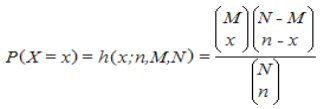
where:
x = sample_s
n = number_sample
M = population_s
N = number_population
Returns one value if a condition you specify evaluates to True and another value if it evaluates to False.
Use IF to conduct conditional tests on values and formulas.
Syntax
IF(logical_test, value_if_true, value_if_false), where:
logical_test is any value or expression that can be evaluated to True or False.
value_if_true is the value that is returned if a logical_test is True.
value_if_false is the value that is returned if a logical_test is False.
Remarks
· Countif and Sumif are additional methods that provide conditional calculations.
The Index function returns the exact cell value from the provided row index and column index from a specific range of cells.
Syntax:
Index(range,row,col)
where:
range is a string to mention the specific range.
row is the integer that indicates the specific row index.
col is the integer that indicates the specific column index.
The Indirect function returns the reference as a string instead of providing the content or range within the cell.
Syntax:
Indirect(content)
where:
content is the string that provides the textual representation of the cell reference.
Rounds a number down to the nearest integer.
Syntax
INT(number), where:
number is the real number that you want to round down to an integer.
Calculates the point at which, the least squares fit line will intersect the y-axis.
Syntax
INTERCEPT(known_y's, known_x's), where:
known_y's is the dependent set of observations or data.
known_x's is the independent set of observations or data.
Remarks
· The equation for the intercept of the regression line, a, is,
where the slope, b, is calculated as:
and x-bar and y-bar are the sample means AVERAGE(known_x's) and AVERAGE(known_y's).
Returns the interest payment for a given period for an investment based on periodic, constant payments and a constant interest rate.
Syntax
IPMT(rate, per, nper, pv, fv, type), where:
rate is the interest rate per period.
per is the period for which you want to find the interest and must be in the range 1 to nper.
nper is the total number of payment periods in an annuity.
pv is the present value or the lump-sum amount that a series of future payments is worth right now.
fv is the future value or a cash balance that you want to attain after the last payment is made. If fv is omitted, it is assumed to be 0 (the future value of a loan, for example, is 0).
type is the number 0 or 1 and indicates when payments are due. If type is omitted, it is assumed to be 0. If type = 0, payments are made at the end of the period. If type is 1, payments are made at the beginning of the period.
Remarks
· Make sure that you are consistent about the units you use for specifying rate and nper. If you make monthly payments on a four-year loan at 12 percent annual interest, use 12%/12 for rate and 4*12 for nper. If you make annual payments on the same loan, use 12% for rate and 4 for nper.
Returns the internal rate of return for a series of cash flows represented by the numbers in values. The cash flows must occur at regular intervals such as monthly or annually.
Syntax
IRR(values, guess), where:
values is an array or a reference to cells that contain numbers for which you want to calculate the internal rate of return.
· Values must contain at least one positive value and one negative value to calculate the internal rate of return.
· IRR uses the order of values to interpret the order of cash flows. Be sure to enter your payment and income values in the sequence you want.
· guess is a number that you guess is close to the result of IRR.
· An iterative technique is used for calculating IRR.
· In most cases, you do not need to provide a guess for the IRR calculation. If a guess is omitted, it is assumed to be 0.1 (10 percent).
The IsErr function checks whether a value is has an error.
Syntax:
IsErr(value)
where:
value is the value that you want to test for error. If the value has an error (except #N/A), this function will return TRUE else returns FALSE.
Returns True if the value is a string that starts with a #.
Syntax
ISERROR(value), where:
value is the value that is to be tested.
The IsNA function returns a boolean value after determining that the provided value is a #NA error value.
Syntax:
IsNA(value)
where:
value is the value, which the function will test.
Returns True if the value parses as a numeric value.
Syntax
ISNUMBER(value), where:
value is the value that is to be tested.
Calculates the interest paid during a specific period of an investment.
Syntax
ISPMT(rate, per, nper, pv), where:
rate is the interest rate for the investment.
per is the period for which you want to find the interest and must be between 1 and nper.
nper is the total number of payment periods for the investment.
pv is the present value of the investment. For a loan, pv is the loan amount.
Remarks
· Make sure that you are consistent about the units you use for specifying rate and nper. If you make monthly payments on a four-year loan at an annual interest rate of 12 percent, use 12%/12 for rate and 4*12 for nper. If you make annual payments on the same loan, use 12% for rate and 4 for nper.
The IsText function returns a boolean value after determining that the provided value is a string.
Syntax:
IsText(text)
where:
text is the value you want to check whether it is a string or not.
The IsNonText function returns the boolean value after determining that the provided value is not a string.
Syntax:
IsNonText(text)
where:
text is the value you want to check whether it is a string or not.
Returns the kurtosis of a data set. Kurtosis characterizes the relative peakedness or flatness of a distribution compared with the normal distribution. Positive kurtosis indicates a relatively peaked distribution. Negative kurtosis indicates a relatively flat distribution.
Syntax
KURT(number1, number2, ...), where:
number1, number2, ... are arguments for which you want to calculate kurtosis. You can also use a single array or a reference to an array instead of arguments separated by commas.
Remarks
· The arguments must be either numbers or names, arrays or references that contain numbers.
· If an array or reference argument contains text, logical values or empty cells, those values are ignored; however, cells with the value zero are included.
· If there are fewer than four data points or if the standard deviation of the sample equals zero, KURT returns the #DIV/0! error value.
· Kurtosis is defined as:

where s is the sample standard deviation.
Returns the k-th largest value in a data set.
Syntax
LARGE(array, k), where:
array is the array or range of data for which you want to determine the k-th largest value.
k is the position (from the largest) in the array or cell range of data to return.
Remarks
· If n is the number of data points in a range, then LARGE(array,1) returns the largest value, and LARGE(array,n) returns the smallest value.
LEFT returns the first character or characters in a text string, based on the number of characters you specify.
Syntax
LEFT(text, num_chars), where:
text is the text string that contains the characters which you want to extract.
num_chars specifies the number of characters which you want LEFT to extract.
Remarks
· Num_chars must be greater than or equal to zero.
· If num_chars is greater than the length of text, LEFT returns all the text.
· If num_chars is omitted, it is assumed to be 1.
Returns the natural logarithm of a number. Natural logarithms are based on the constant e (2.718281828459...).
Syntax
LN(number), where:
number is the positive real number for which you want the natural logarithm.
Remarks
· LN is the inverse of the EXP function.
LEN returns the length of a text string, including spaces.
Syntax
Len(text), where:
text is the text string whose length is to be determined.
Returns the logarithm of a number to the base that you specify.
Syntax
LOG(number, base), where:
number is the positive real number for which you want the logarithm.
base is the base of the logarithm. If base is omitted, it is assumed to be 10.
Returns the base-10 logarithm of a number.
Syntax
LOG10(number), where:
number is the positive real number for which you want the base-10 logarithm.
The IsBlank function checks for blank or null values.
Syntax:
IsBlank(value)
where:
value is the value that you want to test. If the value is blank, this function will return TRUE. If the value is not blank, the function will return FALSE.
This feature enables you to calculate predicted exponential growth using existing data. This calculates and returns an array of values used for the regression analysis. Logest calculates and returns an array of values that is used in regression analysis.
Table 4: Method Table
|
Method |
Description |
Parameters |
Type |
Return Type |
Reference links |
|
Logest() |
Calculates Logest for an array of cells. |
known_y's, known_x's, const, stats |
Method |
String |
N/A |
The following is the formula to calculate Logest for an array of cells in a column:
[Syntax]
=LOGEST(known_y's, [known_x's], [const], [stats])
Known_y's : A set of y-values you already know in a relationship, where y = b*m^x.
Known_x's : An optional set of x-values that you may already know in a relationship, where y = b*m^x.
Const : A logical value specifying whether to force the constant b to equal 1.
Stats : A logical value specifying whether to return additional regression statistics.
[Code]
= Logest(B2:B7,A2:A7,TRUE,FALSE)
The IsLogical function checks whether a value is a logical value and returns TRUE or FALSE.
Syntax:
IsLogical(value)
where:
value is the value that you want to check whether it is logical. If the value is TRUE or FALSE, this function will return TRUE. Otherwise, it will return FALSE.
Returns the inverse of the lognormal cumulative distribution function of x, where ln(x) is normally distributed with parameters mean and standard_dev. If p = LOGNORMDIST(x,...), then LOGINV(p,...) = x.
Syntax
LOGINV(probability, mean, standard_dev), where:
probability is the probability associated with the lognormal distribution.
mean is the mean of ln(x).
standard_dev is the standard deviation of ln(x).
Remarks
· Probability must be >= 0 and < 1.
· Standard_dev must be positive.
· The inverse of the lognormal distribution function is,
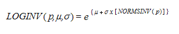
Returns the cumulative lognormal distribution of x, where ln(x) is normally distributed with parameters mean and standard_dev.
Syntax
LOGNORMDIST(x, mean, standard_dev), where:
x is the value at which the function can be evaluated.
mean is the mean of ln(x).
standard_dev is the standard deviation of ln(x).
Remarks
· Both x and standard_dev must be positive.
· The equation for the lognormal cumulative distribution function is,
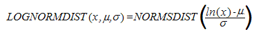
The Lower function converts all characters in a specified text string to lowercase. Characters in the string that are not text are not changed.
Syntax:
Lower(text)
where:
text is the string you want to convert to lowercase.
Returns the largest value in a set of values.
Syntax
MAX(number1, number2, ...), where:
number1, number2, ... are numbers for which you want to find the maximum value.
Returns the largest value in a list of arguments. Text and logical values such as True and False are compared as well as numbers.
Syntax
MAXA(value1, value2, ...), where:
value1, value2, ... are values for which you want to find the largest value.
Remarks
· You can specify arguments that are numbers, empty cells, logical values or text representations of numbers. Arguments that are error values cause errors. If the calculation does not include text or logical values, use the MAX worksheet function instead.
· If an argument is an array or reference, only values in that array or reference are used. Empty cells and text values in the array or reference are ignored.
· Arguments that contain True evaluate as 1; arguments that contain text or False evaluate as 0 (zero).
· If the arguments contain no values, MAXA returns 0 (zero).
Returns the median of the given numbers. The median is the number in the middle of a set of numbers; that is, half the numbers have values that are greater than the median and half have values that are less.
Syntax
MEDIAN(number1, number2, ...), where:
number1, number2, ... are numbers for which you want the median.
Remarks
· If there is an even number of numbers in the set, then MEDIAN calculates the average of the two numbers in the middle.
MID returns a text segment of a character string. The parameters specify the starting position and the number of characters.
Syntax
MID(text, start_position, num_chars), where:
text is the text containing the characters to extract.
start is the position of the first character in the text to extract.
number specifies the number of characters in the part of the text.
Returns the smallest number in a set of values.
Syntax
MIN(number1, number2, ...), where:
number1, number2, ... are numbers for which you want to find the minimum value.
Remarks
· If an argument is an array or reference, only numbers in that array or reference are used. Empty cells, logical values or text in the array or reference are ignored. If logical values and text should not be ignored, use MINA.
Returns the smallest value in the list of arguments. Text and logical values such as True and False are compared as well as numbers.
Syntax
MINA(value1,value2, ...), where:
value1, value2, ... are values for which you want to find the smallest value.
Remarks
· Arguments that contain True evaluate as 1; arguments that contain text or False evaluate as 0 (zero).
Returns the minutes of a time value. The minute is given as an integer, ranging from 0 to 59.
Syntax
MINUTE(serial_number), where:
serial_number is the time that contains the minute you want to find. Times may be entered as text strings within quotation marks (for example, "6:00 PM"), as decimal numbers (for example, 0.75, which represents 6:00 PM), or as results of other formulas or functions (for example, TIMEVALUE("6:00 PM")).
Remarks
· Time values are a portion of a date value and are represented by a decimal number (for example, 12:00 PM is represented as 0.5).
Returns the modified internal rate of return for a series of periodic cash flows.
Syntax
MIRR(values, finance_rate, reinvest_rate), where:
values is an array or a reference to cells that contain numbers. These numbers represent a series of payments (negative values) and income (positive values) occurring at regular periods.
· Values must contain at least one positive value and one negative value to calculate the modified internal rate of return.
· finance_rate is the interest rate you pay on the money used in the cash flows.
· reinvest_rate is the interest rate you receive on the cash flows as you reinvest them.
Remarks
· MIRR uses the order of values to interpret the order of cash flows. Be sure to enter your payment and income values in the sequence you want and with the correct signs (positive values for cash received, negative values for cash paid).
· If n is the number of cash flows in values, frate is the finance_rate, and rrate is the reinvest_rate, then the formula for MIRR is,

Returns the remainder after the number is divided by a divisor. The result has the same sign as the divisor.
Syntax
MOD(number, divisor), where:
number is the number for which you want to find the remainder.
divisor is the value by which you want to divide the number.
Remarks
· The MOD function can be expressed in terms of the INT function,
MOD(n, d) = n – d * INT(n/d)
Returns the most frequently occurring or repetitive, value in an array or range of data.
Syntax
MODE(number1, number2, ...), where:
number1, number2, ... are arguments for which you want to calculate the mode.
Remarks
· In a set of values, the mode is the most frequently occurring value.
Returns the month of a date represented by a serial number. The month is given as an integer, ranging from 1 (January) to 12 (December).
Syntax
MONTH(serial_number), where:
serial_number is the date of the month you are trying to find. Dates should be entered by using the DATE function or as results of other formulas or functions. For example, use DATE(2002,11,12) for the 12th day of Nov, 2002.
Remarks
· Dates are stored as sequential serial numbers so that they can be used in calculations. By default, January 1, 1900 is serial number 1 and January 1, 2008 is serial number 39448 because it is 39,448 days after January 1, 1900.
Returns the negative binomial distribution. NEGBINOMDIST returns the probability that there will be number_f failures before the number_s-th success, when the constant probability of a success is probability_s.
Syntax
NEGBINOMDIST(number_f, number_s, probability_s), where:
number_f is the number of failures.
number_s is the threshold number of successes.
probability_s is the probability of a success.
Remarks
· number_s must be >= 1.
· probability_s must be >= 0 and <= 1.
· number_f must be >= 0.
· The equation for the negative binomial distribution is,

where x is number_f, r is number_s and p is probability_s.
Returns the normal distribution for the specified mean and standard deviation.
Syntax
NORMDIST(x, mean, standard_dev, cumulative), where:
x is the value for which you want the distribution.
mean is the arithmetic mean of the distribution.
standard_dev is the standard deviation of the distribution.
cumulative is a logical value that determines the form of the function. If cumulative is True, NORMDIST returns the cumulative distribution function; if False, it returns the probability mass function.
Remarks
· Standard_dev must be > 0.
· The equation for the normal density function (cumulative = False) is,

· When cumulative = True, the formula is the integral from negative infinity to x of the given formula.
The NormsDist function returns the probability that the observed value of a standard normal random variable will be less than or equal to the parameter.
Syntax:
NormsDist(value)
where:
value is a numeric value that checks with the random variable.
Returns the inverse of the normal cumulative distribution for the specified mean and standard deviation.
Syntax
NORMINV(probability, mean, standard_dev), where:
probability is a probability corresponding to the normal distribution.
mean is the arithmetic mean of the distribution.
standard_dev is the standard deviation of the distribution.
Remarks
· Probability must be >= 0 and <= 1.
· standard_dev must be > 0.
Given a value for probability, NORMINV seeks value x such that NORMDIST(x, mean, standard_dev, True) = probability. NORMINV uses an iterative search technique.
The NormsInv function returns the standard normal random variable that has Mean 0 and Standard Deviation 1
Syntax:
NormsDist(value)
where:
value is the probability of the standard deviation.
Reverses the value of its argument.
Syntax
NOT(logical), where:
logical is a value or expression that can be evaluated to True or False.
Returns the serial number of the current date and time.
Syntax
NOW( )
Remarks
· Dates are stored as sequential serial numbers so that they can be used in calculations. By default, January 1, 1900 is serial number 1 and January 1, 2008 is serial number 39448 because it is 39,448 days after January 1, 1900.
· Numbers to the right of the decimal point in the serial number represent the time; numbers to the left represent the date. For example, the serial number .5 represents the time 12:00 noon.
Returns the number of periods for an investment based on periodic, constant payments and a constant interest rate.
Syntax
NPER(rate, pmt, pv, fv, type), where:
rate is the interest rate per period.
pmt is the payment made each period; it cannot change over the life of the annuity.
pv is the present value or the lump-sum amount that a series of future payments is worth right now.
fv is the future value or a cash balance that you want to attain after the last payment is made. If fv is omitted, it is assumed to be 0 (the future value of a loan, for example, is 0).
type is the number 0 or 1 and indicates when payments are due. If type equals:
· 0 - Payments are due at the end of the period.
· 1 - Payments are due at the beginning of the period.
Calculates the net present value of an investment by using a discount rate and a series of future payments (negative values) and income (positive values).
Syntax
NPV(rate, value1, value2, ...), where:
rate is the rate of discount over the length of one period.
value1, value2, ... are arguments representing the payments and income.
· Value1, value2, ... must be equally spaced in time and occur at the end of each period.
· NPV uses the order of value1, value2, ... to interpret the order of cash flows. Be sure to enter your payment and income values in the correct sequence.
Remarks
· The NPV investment begins one period before the date of the value1 cash flow and ends with the last cash flow in the list. The NPV calculation is based on future cash flows. If your first cash flow occurs at the beginning of the first period, the first value must be added to the NPV result, not included in the value arguments.
· If n is the number of cash flows in the list of values, the formula for NPV is,
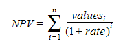
Returns the number rounded up to the nearest odd integer.
Syntax
ODD(number), where:
number is the value to be rounded off.
Remarks
· Regardless of the sign of a number, a value is rounded up when adjusted away from zero. If the number is an odd integer, no rounding occurs.
Returns True if any argument is True; returns False if all arguments are False.
Syntax
OR(logical1, logical2, ...), where:
logical1, logical2, ... are conditions you want to test that can be either True or False.
Remarks
· The arguments must evaluate to logical values such as True or False or in arrays or references that contain logical values.
Returns the Pearson product moment correlation coefficient, r, a dimensionless index that ranges from -1.0 to 1.0 inclusive and reflects the extent of a linear relationship between two data sets.
Syntax
PEARSON(array1, array2), where:
array1 is a set of independent values.
array2 is a set of dependent values.
Remarks
· The arguments must be either numbers or names, array constants or references that contain numbers.
· The formula for the Pearson product moment correlation coefficient, r, is,
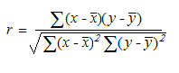
where x-bar and y-bar are the sample means AVERAGE(array1) and AVERAGE(array2).
Returns the k-th percentile of values in a range.
Syntax
PERCENTILE(array, k), where:
array is the array or range of data that defines relative standing.
k is the percentile value in the range 0..1, inclusive.
Remarks
· k must be >=10 and <= 1.
· If k is not a multiple of 1/(n - 1), PERCENTILE interpolates to determine the value at the k-th percentile.
Returns the rank of a value in a data set as a percentage of the data set.
Syntax
PERCENTRANK(array, x, significance), where:
array is the range of data with numeric values that defines relative standing.
x is the value for which you want to know the rank.
significance is an optional value that identifies the number of significant digits for the returned percentage value. If omitted, PERCENTRANK uses three digits (0.xxx).
Remarks
· Significance must be >= 1.
· If x does not match one of the values in the array, PERCENTRANK interpolates to return the correct percentage rank.
Returns the number of permutations for a given number of objects that can be selected from a number of objects.
Syntax
PERMUT(number, number_chosen), where:
number is an integer that describes the number of objects.
number_chosen is an integer that describes the number of objects in each permutation.
Remarks
· Number must be > 0 and number_chosen must be >= 0.
· Number must be >= number_chosen.
· The equation for the number of permutations is,

Returns the number 3.14159265358979, the mathematical constant pi, accurate to 15 digits.
Syntax
PI( )
Calculates the payment for a loan based on constant payments and a constant interest rate.
Syntax
PMT(rate, nper, pv, fv, type), where:
rate is the interest rate for the loan.
nper is the total number of payments for the loan.
pv is the present value or the total amount that a series of future payments is worth now; also known as the principal.
fv is the future value or a cash balance you want to attain after the last payment is made. If fv is omitted, it is assumed to be 0 (zero), that is, the future value of a loan is 0.
type is the number 0 (zero) or 1 and indicates when payments are due. If type equals:
· 0 - Payments are due at the end of the period.
· 1 - Payments are due at the beginning of the period.
Remarks
· The payment returned by PMT includes principal and interest but no taxes, reserve payments or fees sometimes associated with loans.
· Make sure that you are consistent about the units you use for specifying rate and nper. If you make monthly payments on a four-year loan at an annual interest rate of 12 percent, use 12%/12 for rate and 4*12 for nper. If you make annual payments on the same loan, use 12 percent for rate and 4 for nper.
Returns the Poisson distribution.
Syntax
POISSON(x, mean, cumulative), where:
x is the number of events.
mean is the expected numeric value.
cumulative is a logical value that determines the form of the probability distribution returned. If cumulative is True, POISSON returns the cumulative Poisson probability that the number of random events occurring will be between zero and x inclusive; if False, it returns the Poisson probability mass function that the number of events occurring will be exactly x.
Remarks
· X must be >= 0.
· Mean must be > 0.
· POISSON is calculated as follows:
For cumulative = False,

For cumulative = True,

The Pow function returns the number raised to the specified power.
Syntax:
POW(number, power)
where:
number is the base number. It can be any real number.
power is the exponent to which, the base number is raised.
Returns the result of a number raised to a power.
Syntax
POWER(number, power), where:
number is the base number. It can be any real number.
power is the exponent to which the base number is raised.
Returns the payment on the principal for a given period, for an investment based on periodic, constant payments and a constant interest rate.
Syntax
PPMT(rate, per, nper, pv, fv, type), where:
rate is the interest rate per period.
per specifies the period and must be in the range of 1 to nper.
nper is the total number of payment periods in an annuity.
pv is the present value— the total amount that a series of future payments is worth now.
fv is the future value or a cash balance that you may want to attain after the last payment is made. If fv is omitted, it is assumed to be 0 (zero), that is, the future value of a loan is 0.
type is the number 0 or 1 and indicates when payments are due. If type equals:
· 0 - Payments are due at the end of the period.
· 1 - Payments are due at the beginning of the period.
Remarks
· Make sure that you are consistent about the units you use for specifying rate and nper. If you make monthly payments on a four-year loan at 12 percent annual interest, use 12%/12 for rate and 4*12 for nper. If you make annual payments on the same loan, use 12% for rate and 4 for nper.
Returns the probability whose values are in a range that is between two limits. If upper_limit is not supplied, returns the probability that values in x_range are equal to lower_limit.
Syntax
PROB(x_range, prob_range, lower_limit, upper_limit), where:
x_range is the range of numeric values of x with which there are associated probabilities.
prob_range is a set of probabilities associated with values in x_range.
lower_limit is the lower bound on the value for which you want a probability.
upper_limit is the optional upper bound on the value for which you want a probability.
Remarks
· Any value in prob_range must be > 0 and < 1.
· If upper_limit is omitted, PROB returns the probability of being equal to lower_limit.
Multiplies all the numbers given as arguments and returns the product.
Syntax
PRODUCT(number1, number2, ...), where:
number1, number2, ... are numbers that you want to multiply.
Returns the present value of an investment. The present value is the total amount that a series of future payments is worth now.
Syntax
PV(rate, nper, pmt, fv, type), where:
rate is the interest rate per period. For example, if you obtain an automobile loan at a 10% annual interest rate and make monthly payments, your interest rate per month is 10%/12 or 0.83%. You would enter 10%/12 or 0.83% or 0.0083, into the formula as the rate.
nper is the total number of payment periods in an annuity. For example, if you get a four-year car loan and make monthly payments, your loan has 4*12 (or 48) periods. You would enter 48 into the formula for nper.
pmt is the payment made for each period and cannot change over the life of the annuity. Typically, pmt includes principal and interest but, no other fees or taxes. For example, the monthly payments on a $10,000, four-year car loan at 12 percent are $263.33. You will have to enter -263.33 into the formula as the pmt. If pmt is omitted, you must include the fv argument.
fv is the future value or a cash balance that you want to attain after the last payment is made. If fv is omitted, it is assumed to be 0 (the future value of a loan, for example, is 0). For example, if you want to save $50,000 to pay for a special project in 18 years, then $50,000 is the future value. You could then make a conservative guess at an interest rate and determine how much you must save each month. If fv is omitted, you must include the pmt argument.
type is the number 0 or 1 and indicates when payments are due. If type equals:
· 0 - Payments are due at the end of the period.
· 1 - Payments are due at the beginning of the period.
Remarks
· Make sure that you are consistent about the units you use for specifying rate and nper. If you make monthly payments on a four-year loan at 12 percent annual interest, use 12%/12 for rate and 4*12 for nper. If you make annual payments on the same loan, use 12% for rate and 4 for nper.
· In annuity functions, the cash you pay out such as a deposit to savings is represented by a negative number; the cash you receive such as a dividend check is represented by a positive number.
· One financial argument is solved for in terms of the others. If rate is not 0, then,

If rate is 0, then,
(pmt * nper) + pv + fv = 0
Returns the quartile of a data set.
Syntax
QUARTILE(array, quart), where:
array is the array or cell range of numeric values for which you want the quartile value.
quart indicates which value to return.
|
Value Returned
| |
|
0 |
Minimum value
|
|
1 |
First quartile (25th percentile)
|
|
2 |
Median value (50th percentile)
|
|
3 |
Third quartile (75th percentile)
|
|
4 |
Maximum value
|
Converts degrees to radians.
Syntax
RADIANS(angle), where:
angle is an angle in degrees that you want to convert.
Returns an evenly distributed random number greater than or equal to 0 and less than 1.
Syntax
RAND( )
Returns the rank of a number in a list of numbers. The rank of a number is its size relative to other values in a list. (If you were to sort the list, the rank of the number would be its position)
Syntax
RANK(number, ref, order), where:
number is the number whose rank you want to find.
ref is an array of or a reference to a list of numbers.
order is a number specifying how to rank numbers.
· If the order is 0 (zero) or omitted, the number is ranked as if ref were a list sorted in descending order.
· If the order is any nonzero value, the number is ranked as if ref were a list sorted in ascending order.
Remark
· RANK gives duplicate numbers of the same rank. However, the presence of duplicate numbers will affect the ranks of subsequent numbers.
Returns the interest rate per period of an annuity. RATE is calculated by iteration and may not converge to a unique solution.
Syntax
RATE(nper, pmt, pv, fv, type, guess), where:
nper is the total number of payment periods in an annuity.
pmt is the payment made for each period and cannot change over the life of the annuity. Typically, pmt includes the principal and interest but, no other fees or taxes. If pmt is omitted, you must include the fv argument.
pv is the present value— the total amount that a series of future payments is worth now.
fv is the future value or a cash balance that you want to attain after the last payment is made. If fv is omitted, it is assumed to be 0 (the future value of a loan, for example, is 0).
type is the number 0 or 1 and indicates when payments are due. If type equals:
· 0 - Payments are due at the end of the period.
· 1 - Payments are due at the beginning of the period.
· guess is your guess for what the rate will be.
· If you omit guess, it is assumed to be 10 percent.
· If RATE does not converge, try different values for guess. RATE usually converges if guess is between 0 and 1.
RIGHT returns the last character or characters in a text string, based on the number of characters you specify.
Syntax
RIGHT(text, num_chars), where:
text is the text string containing the characters you want to extract.
num_chars specifies the number of characters you want RIGHT to extract.
Remarks
· Num_chars must be greater than or equal to zero.
· If num_chars is greater than the length of text, RIGHT returns all the text.
· If num_chars is omitted, it is assumed to be 1.
Rounds a number to a specified number of digits.
Syntax
ROUND(number, num_digits), where:
number is the number you want to round off.
num_digits specifies the number of digits you want to round off.
Remarks
· If num_digits > 0, then number is rounded off to the specified number of decimal places.
· If num_digits = 0, then number is rounded off to the nearest integer.
· If num_digits < 0, then number is rounded off to the left of the decimal point.
Rounds a number down towards zero.
Syntax
ROUNDDOWN(number, num_digits), where:
number is any real number that you want rounded down.
Num_digits is the number of digits to which you want to round a number.
Remark
· ROUNDDOWN behaves like ROUND, except that it always rounds a number down.
Rounds a number up away from 0 (zero).
Syntax
ROUNDUP(number, num_digits), where:
number is any real number that you want rounded up.
num_digits is the number of digits to which you want to round a number.
Remarks
· ROUNDUP behaves like ROUND, except that it always rounds a number up.
Returns the square of the Pearson product moment correlation coefficient through data points in known_y's and known_x's.
Syntax
RSQ(known_y's, known_x's), where:
known_y's is an array or range of data points.
known_x's is an array or range of data points.
Remarks
· The equation for the Pearson product moment correlation coefficient is,
where:
x-bar and y-bar are the sample means AVERAGE(known_x's) and AVERAGE(known_y's).
RSQ returns r2 which, is the square of this correlation coefficient.
Returns the seconds of a time value. The second is given as an integer in the range 0 (zero) to 59.
Syntax
SECOND(serial_number), where:
serial_number is the time that contains the seconds you want to find.
Remarks
· Time values are a portion of a date value and are represented by a decimal number (for example, 12:00 PM is represented as 0.5 because it is half of a day).
Determines the sign of a number. Returns 1 if the number is positive, zero (0) if the number is 0 and -1 if the number is negative.
Syntax
SIGN(number), where:
number is any real number.
Returns the sine of the given angle.
Syntax
SIN(number), where:
number is the angle in radians for which you want the sine.
Returns the hyperbolic sine of a number.
Syntax
SINH(number), where:
number is any real number.
Remarks
· The formula for the hyperbolic sine is,
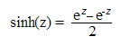
Returns the skewness of a distribution. Skewness characterizes the degree of asymmetry of a distribution around its mean.
Syntax
SKEW(number1, number2, ...), where:
number1, number2 ... are arguments for which you want to calculate the skewness. You can also use a single array or a reference to an array instead of arguments separated by commas.
Remarks
· The equation for skewness is defined as follows.

Returns the straight-line depreciation of an asset for one period.
Syntax
SLN(cost, salvage, life), where:
cost is the initial cost of the asset.
salvage is the value at the end of the depreciation (sometimes called the salvage value of the asset).
life is the number of periods over which the asset is depreciated (the useful life of the asset).
Returns the slope of the linear regression line through data points in known_y's and known_x's. The slope is the rate of change along the regression line.
Syntax
SLOPE(known_y's, known_x's), where:
known_y's is an array or cell range of numeric dependent data points.
known_x's is the set of independent data points.
Remarks
· The equation for the slope of the regression line is,
where x-bar and y-bar are the sample means AVERAGE(known_x's) and AVERAGE(known_y's).
Returns the k-th smallest value in a data set.
Syntax
SMALL(array, k), where:
array is an array or range of numerical data for which you want to determine the k-th smallest value.
k is the position (from the smallest) in the array or range of data to return.
Returns a positive square root.
Syntax
SQRT(number), where:
number is the number for which you want the square root.
Remarks
· Number must be >= 0.
Returns a normalized value from a distribution characterized by mean and standard_dev.
Syntax
STANDARDIZE(x,mean, standard_dev), where:
x is the value that you want to normalize.
mean is the arithmetic mean of the distribution.
standard_dev is the standard deviation of the distribution.
Remarks
· standard_dev must be > 0.
· The equation for the normalized value is,
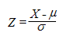
Estimates the standard deviation based on a sample. The standard deviation is a measure of how widely values are dispersed from the average value (the mean).
Syntax
STDEV(number1, number2, ...), where:
number1, number2, ... are number arguments corresponding to a sample of a population.
Remarks
· STDEV assumes that its arguments are a sample of the population. If your data represents the entire population, then compute the standard deviation using STDEVP.
· STDEV uses the following formula,

where x-bar is the sample mean AVERAGE(number1,number2,…) and n is the sample size.
Estimates standard deviation based on a sample. The standard deviation is a measure of how widely values are dispersed from the average value (the mean). Text and logical values such as True and False are also included in the calculation.
Syntax
STDEVA(value1, value2, ...), where:
value1, value2, ... are values corresponding to a sample of a population. You can also use a single array or a reference to an array instead of arguments separated by commas.
Remarks
· Arguments that contain True evaluate as 1; arguments that contain text or False evaluate as 0 (zero).
· STDEVA uses the following formula,
where x-bar is the sample mean AVERAGE(value1,value2,…) and n is the sample size.
Calculates standard deviation based on the entire population given as arguments.
Syntax
STDEVP(number1, number2, ...), where:
number1, number2, ... are 1 to 30 number arguments corresponding to a population. You can also use a single array or a reference to an array instead of arguments separated by commas.
Remarks
· STDEVP assumes that its arguments are the entire population. If your data represents a sample of the population, then compute the standard deviation using STDEV.
· STDEVP uses the following formula,
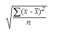
where x is the sample mean AVERAGE(number1,number2,…) and n is the sample size.
Calculates the standard deviation based on the entire population given as arguments, including text and logical values.
Syntax
STDEVPA(value1, value2, ...), where:
value1, value2, ... are values corresponding to a population. You can also use a single array or a reference to an array instead of arguments separated by commas.
Remarks
· Arguments that contain True evaluate as 1; arguments that contain text or False evaluate as 0 (zero).
· STDEVPA uses the following formula,
where x-bar is the sample mean AVERAGE(value1,value2,…) and n is the sample size.
Returns the standard error of the predicted y-value for each x in the regression.
Syntax
STEYX(known_y's, known_x's), where:
known_y's is an array or range of dependent data points.
known_x's is an array or range of independent data points.
Remarks
· The equation for the standard error of the predicted y is,

where x-bar and y-bar are the sample means AVERAGE(known_x’s) and AVERAGE(known_y’s) and n is the sample size.
Substitutes new_text for old_text in a text string. Use SUBSTITUTE when you want to replace specific text in a text string; use REPLACE when you want to replace any text that occurs in a specific location in a text string.
Syntax
SUBSTITUTE(text, old_text, new_text, instance_num), where:
· Text is the text or the reference to a cell containing text for which you want to substitute characters.
· Old_text is the text you want to replace.
· New_text is the text you want to replace old_text with.
· Instance_num specifies which occurrence of old_text you want to replace with new_text. If you specify instance_num, only that instance of old_text is replaced. Otherwise, every occurrence of old_text in text is changed to new_text.
Example
The example may be easier to understand if you copy it to a blank worksheet.
|
|
A |
|
|
1 |
Data |
|
|
2 |
Sales Data |
|
|
3 |
Quarter 1, 2008 |
|
|
4 |
Quarter 1, 2011 |
|
|
|
Formula |
Description (Result) |
|
|
=SUBSTITUTE(A2, "Sales", "Cost") |
Substitutes Cost for Sales (Cost Data). |
|
|
=SUBSTITUTE(A3, "1", "2", 1) |
Substitutes first instance of "1" with "2" (Quarter 2, 2008). |
|
|
=SUBSTITUTE(A4, "1", "2", 3) |
Substitutes third instance of "1" with "2" (Quarter 1, 2012). |
The Sum function adds all numbers in a range of cells and returns the result.
Syntax:
Sum(number1, number2, ... number_n)
where:
number1 is the first number, number2 is the second and number_n is the nth number to be added together.
Adds the cells specified by a given criteria.
Syntax
SUMIF(range, criteria, sum_range), where:
range is the range of cells you want evaluated.
criteria is the criteria in the form of a number, expression or text that defines which, cells will be added. For example, criteria can be expressed as ">32" or some other logical expression.
Sum_range are the actual cells to sum.
Remarks
· The cells in sum_range are summed only if their corresponding cells in range match the criteria.
· If sum_range is omitted, the cells in range are summed.
Multiplies corresponding components in the given arrays and returns the sum of those products.
Syntax
SUMPRODUCT(array1, array2, array3, ...), where:
array1, array2, array3, ... are 2 to 30 arrays whose components you will want to multiply and then add.
Remarks
· The array arguments must have the same dimensions.
· SUMPRODUCT treats array entries that are not numeric as if they were zeros.
Returns the sum of the squares of the arguments.
Syntax
SUMSQ(number1, number2, ...), where:
number1, number2, ... are arguments for which you want the sum of the squares. You can also use a single array or a reference to an array instead of arguments separated by commas.
Returns the sum of the difference of squares of corresponding values in two arrays.
Syntax
SUMX2MY2(array_x, array_y), where:
array_x is the first array or range of values.
array_y is the second array or range of values.
Remarks
· If an array or reference argument contains text, logical values or empty cells, those values are ignored; however, cells with the value zero are included.
· The equation for the sum of the difference of squares is,
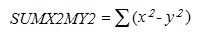
Returns the sum of the sum of squares of corresponding values in two arrays. The sum of the sum of squares is a common term in many statistical calculations.
Syntax
SUMX2PY2(array_x, array_y), where:
array_x is the first array or range of values.
array_y is the second array or range of values.
Remarks
· If an array or reference argument contains text, logical values or empty cells, those values are ignored; however, cells with the value zero are included.
· The equation for the sum of the sum of squares is,
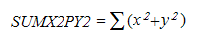
Returns the sum of squares of differences of corresponding values in two arrays.
Syntax
SUMXMY2(array_x, array_y), where:
array_x is the first array or range of values.
array_y is the second array or range of values.
Remarks
· If an array or reference argument contains text, logical values or empty cells, those values are ignored; however, cells with the value zero are included.
· The equation for the sum of squared differences is,
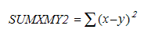
Returns the sum-of-years' digits depreciation of an asset for a specified period.
Syntax
SYD(cost, salvage, life, per), where:
cost is the initial cost of the asset.
salvage is the value at the end of the depreciation (sometimes called the salvage value of the asset).
life is the number of periods over which the asset is depreciated (sometimes called the useful life of the asset).
per is the period and must use the same units as life.
Remarks
· SYD is calculated as follows,
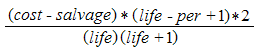
Returns the tangent of the given angle.
Syntax
TAN(number), where:
number is the angle in radians for which, you want the tangent.
Returns the hyperbolic tangent of a number.
Syntax
TANH(number), where:
number is any real number.
Remarks
· The formula for the hyperbolic tangent is,
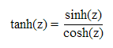
Converts a value to text in a specific number format.
Syntax
TEXT(value, format_text), where:
value is a numeric value a formula that evaluates to a numeric value or a reference to a cell containing a numeric value.
format_text is a number format in text form in the Category box on the Number tab in the Format Cells dialog box.
Returns the decimal number for a particular time.
The decimal number returned by TIME is a value ranging from 0 (zero) to 0.99999999, representing the times from 0:00:00 (12:00:00 A.M.) to 23:59:59 (11:59:59 P.M.).
Syntax
TIME(hour, minute, second), where:
hour is a number from 0 (zero) to 23 representing the hour.
minute is a number from 0 to 59 representing the minute.
second is a number from 0 to 59 representing the second.
Returns the decimal number of the time represented by a text string. The decimal number is a value ranging from 0 (zero) to 0.99999999, representing the times from 0:00:00 (12:00:00 A.M.) to 23:59:59 (11:59:59 P.M.).
Syntax
TIMEVALUE(time_text), where:
time_text is a text string that represents a time as a formatted string; for example, "6:45 PM" and "18:45" text strings within quotation marks that represent time.
Remarks
· Date information in time_text is ignored.
Returns the serial number of the current date. The serial number is the number of days since Jan 1, 1900.
Syntax
TODAY( )
Remarks
· Dates are stored as sequential serial numbers so that they can be used in calculations. By default, January 1, 1900 is serial number 1 and January 1, 2008 is serial number 39448 because it is 39,448 days after January 1, 1900.
The Trim function returns a text value with the leading and trailing spaces removed.
Syntax:
Trim(text)
where:
text is the text value for which you want to remove the leading and the trailing spaces.
Returns the mean of the interior of a data set. TRIMMEAN calculates the mean taken by excluding a percentage of data points from the top and bottom tails of a data set.
Syntax
TRIMMEAN(array, percent), where:
array is the array or range of values to trim and average.
percent is the fractional number of data points to exclude from the calculation. For example, if percent = 0.2, 4 points are trimmed from a data set of 20 points (20 x 0.2): 2 from the top and 2 from the bottom of the set.
Remarks
· Percent must be >= 0 and <= 1.
· TRIMMEAN rounds off the number of excluded data points down to the nearest multiple of 2. If percent = 0.1, 10 percent of 30 data points equals 3 points. For symmetry, TRIMMEAN excludes a single value from the top and bottom of the data set.
Truncates a number to an integer by removing the fractional part of the number.
Syntax
TRUNC(number, num_digits), where:
number is the number you want to truncate.
num_digits is a number specifying the precision of the truncation. The default value for num_digits is 0 (zero).
Remarks
· TRUNC and INT are similar in that both return integers. TRUNC removes the fractional part of the number. INT rounds numbers down to the nearest integer based on the value of the fractional part of the number. INT and TRUNC are different only when using negative numbers: TRUNC(-4.3) returns -4 but, INT(-4.3) returns -5 because -5 is the lower number.
The True function returns the logical value when the given sting value is true.
Syntax:
True(stringvalue)
where:
stringvalue is to provide any text value or empty string.
The Upper function converts all characters in a text string to uppercase.
Syntax:
Upper(text)
where:
text is the string you want to convert to uppercase.
Converts a text string that represents a number to a number.
Syntax
VALUE(text), where:
text is the text enclosed in quotation marks or a reference to a cell containing the text you want to convert.
Remarks
· Text can be in any of the constant number, date or time formats recognized by Essential Calculate.
· You do not generally need to use the VALUE function in a formula, as the text is automatically converted to numbers as necessary.
Estimates variance based on a sample.
Syntax
VAR(number1, number2, ...), where:
number1, number2, ... are arguments corresponding to a sample of a population.
Remarks
· VAR assumes that its arguments are a sample of the population. If your data represents the entire population, then compute the variance using VARP.
· Logical values such as True, False and text are ignored. If logical values and text must not be ignored, use the VARA worksheet function.
· VAR uses the following formula,
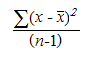
where x-bar is the sample mean AVERAGE(number1,number2,…) and n is the sample size.
Estimates variance based on a sample. In addition to numbers and text, logical values such as True and False are included in the calculation.
Syntax
VARA(value1, value2, ...), where:
value1, value2, ... are value arguments corresponding to a sample of a population.
Remarks
· VARA assumes that its arguments are a sample of the population. If your data represents the entire population, you must compute the variance using VARPA.
· Arguments that contain True evaluate as 1; arguments that contain text or False evaluate as 0 (zero). If the calculation must not include text or logical values, use the VAR worksheet function instead.
· VARA uses the following formula,
where x-bar is the sample mean AVERAGE(value1,value2,…) and n is the sample size.
Calculates variance based on the entire population.
Syntax
VARP(number1, number2, ...), where:
number1, number2, ... are number arguments corresponding to a population.
Remarks
· VARP assumes that its arguments are the entire population. If your data represents a sample of the population, then compute the variance using VAR.
· The equation for VARP is,

where x-bar is the sample mean AVERAGE(number1,number2,…) and n is the sample size.
Calculates variance based on the entire population. In addition to numbers and text, logical values such as True and False are also included in the calculation.
Syntax
VARPA(value1, value2, ...), where:
value1, value2, ... are arguments corresponding to a population.
Remarks
· VARPA assumes that its arguments are the entire population. If your data represents a sample of the population, you must compute the variance using VARA.
· Arguments that contain True evaluate as 1; arguments that contain text or False evaluate as 0 (zero). If the calculation does not include text or logical values, use the VARP worksheet function instead.
· The equation for VARPA is,
where x is the sample mean AVERAGE(value1,value2,…) and n is the sample size.
Returns the depreciation of an asset for any period you specify, including partial periods, using the double-declining balance method or some other method you specify. VDB stands for variable declining balance.
Syntax
VDB(cost, salvage, life, start_period, end_period, factor, no_switch), where:
cost is the initial cost of the asset.
salvage is the value at the end of the depreciation (sometimes called the salvage value of the asset).
life is the number of periods over which the asset is depreciated (sometimes called the useful life of the asset).
start_period is the starting period for which you want to calculate the depreciation. start_period must use the same units as life.
end_period is the ending period for which you want to calculate the depreciation. end_period must use the same units as life.
factor is the rate at which, the balance declines. If factor is omitted, it is assumed to be 2 (the double-declining balance method).
no_switch is a logical value specifying whether to switch to straight-line depreciation when depreciation is greater than the declining balance calculation.
· If no_switch is True, straight-line depreciation is not used even when the depreciation is greater than the declining balance calculation.
· If no_switch is False or omitted, straight-line depreciation is used when depreciation is greater than the declining balance calculation.
All arguments except no_switch must be positive numbers.
Searches for a value in the left most column of a table and then returns a value in the same row from a column you specify in the table. Use VLOOKUP instead of HLOOKUP when your comparison values are located in a column to the left of the data you want to find.
The V in VLOOKUP stands for "Vertical."
Syntax
VLOOKUP(lookup_value, table_array, col_index_num, range_lookup), where:
lookup_value is the value to be found in the first column of the array. Lookup_value can be a value, a reference or a text string.
table_array is the table of information in which data is looked up. Use a reference to a range or a range name.
· If range_lookup is True, the values in the first column of the table_array must be placed in ascending order: ..., -2, -1, 0, 1, 2, ..., A-Z, False, True; otherwise VLOOKUP may not give the correct value. If range_lookup is False, table_array does not need to be sorted.
· The values in the first column of the table_array can be text, numbers or logical values.
· Uppercase and lowercase text are equivalent.
col_index_num is the column number in the table_array from which the matching value must be returned. A col_index_num of 1 returns the value in the first column of the table_array; a col_index_num of 2 returns the value in the second column of the table_array, and so on.
range_lookup is a logical value that specifies whether you want VLOOKUP to find an exact match or an approximate match. If True or omitted, an approximate match is returned. In other words, if an exact match is not found, the next largest value that is less than the lookup_value is returned.
Remarks
· If VLOOKUP can't find a lookup_value and the range_lookup is True, it uses the largest value that is less than or equal to the lookup_value.
Returns the day of the week corresponding to a date. The day is given as an integer, ranging from 1 (Sunday) to 7 (Saturday) by default.
Syntax
WEEKDAY(serial_number, return_type), where:
serial_number is a sequential number that represents the date of the day you are trying to find. Dates should be entered by using the DATE function or as results of other formulas or functions. For example, use DATE(2008,5,23) for the 23rd day of May 2008.
return_type is a number that determines the type of return value.
|
Return_type is |
Number Returned
|
|
1 or omitted |
Numbers 1 (Sunday) through 7 (Saturday). |
|
2 |
Numbers 1 (Monday) through 7 (Sunday). |
|
3 |
Numbers 0 (Monday) through 6 (Sunday). |
Remarks
· Dates are stored as sequential serial numbers so that they can be used in calculations. By default, January 1, 1900 is serial number 1 and January 1, 2008 is serial number 39448 because it is 39,448 days after January 1, 1900.
Returns the Weibull distribution.
Syntax
WEIBULL(x, alpha, beta, cumulative), where:
x is the value at which to evaluate the function.
alpha is a parameter to the distribution.
beta is a parameter to the distribution.
cumulative determines the form of the function.
Remarks
· X must be >= 0.
· Alpha and beta must > 0.
· The equation for the Weibull cumulative distribution function is,

· The equation for the Weibull probability density function is,
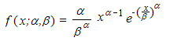
· When alpha = 1, WEIBULL returns the exponential distribution with,

The Xirr function computes the internal rate-of-return for a schedule of possibly non-periodic cash flows.
Syntax:
Xirr(cashflow, datelist, value)
where:
cashflow is the range of cash flow.
datelist is the list of serial number of the corresponding date values.
value is an initial guess interger value which reflects in the result of the function.
Returns the year corresponding to a date. The year is returned as an integer in the range 1900-9999.
Syntax
YEAR(serial_number), where:
serial_number is the date of the year you want to find. Dates should be entered by using the DATE function or as results of other formulas or functions. For example, use DATE(2002,11,12) for the 12th day of November 2002.
Remarks
· Dates are stored as sequential serial numbers so that they can be used in calculations. By default, January 1, 1900 is serial number 1 and January 1, 2008 is serial number 39448 because it is 39,448 days after January 1, 1900.
Returns the one-tailed probability-value of a z-test.
Syntax
ZTEST(array, u0, sigma), where:
array is the array or range of data against which to test u0
u0 is the value to test.
sigma is the population (known) standard deviation. If omitted, the sample standard deviation is used.
Remarks
· ZTEST is calculated as follows when sigma is not omitted,
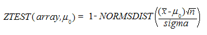
· or when sigma is omitted,

where x is the sample mean AVERAGE(array); s is the sample standard deviation STDEV(array); and n is the number of observations in the sample COUNT(array).